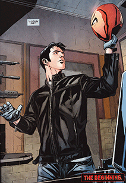

Jason Todd
History
Jason Todd is a vigilante anti-hero who has been a member of and antagonist to the Batman Family. Batman originally trained him to be the second Robin, his new side-kick after Dick Grayson became Nightwing. Jason was murdered by the Joker, although he was later resurrected and returned as the second Red Hood.
Career as Robin
After six months of training, Jason was ready to go into action as the new Boy Wonder. In his early adventures, Robin assisted Batman against notable criminals like Two-Face, Magpie, Mime, the Crime Doctor, The KGBeast, Deacon Blackfire and the Dumpster Slasher. While working on this last case, Jason became more aggressive and driven against criminals. Unlike Batman's first protegee Dick Grayson, Jason was impulsive, reckless, and full of rage. After a first meeting with his predecesor, Jason struck a good enough friendship with Nightwing and during a troubled time for the Titans, Jason is recruited by Donna Troy to help on a mission. Jason becomes frustrated by the situation when Donna expects him to figure out plans and save everyone, like Dick would.